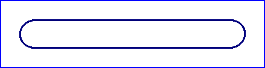

Lingotto, Turin
Type: Test Track
Length: 0.621 Miles // 1.000 km
The FIAT factory in Turin was designed in 1917 by the architect Giacomo Mattè Trucco. The Lingotto building was opened on the 22nd of May 1923, featuring five floors of workshops covering a width of 80 meters. A 1 kilometer test track with a width of 15 meters was built on the roof of the building. The factory was closed on the 21st of February 1982, with the building later been redeveloped as the Le Meridien Lingotto hotel and conference centre.
|| Contents | Building | Test Track || Home ||
Click on a hyperlink above to view the photos

Return to racingcircuits.net's Photo
Archive Main Index
Photography by Eelco Wind & Arbam de Boer. Information kindly provided by Roelard Smit.